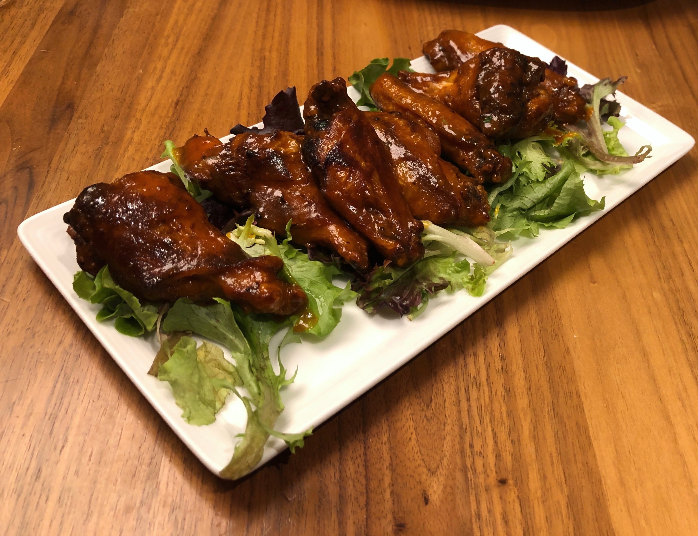
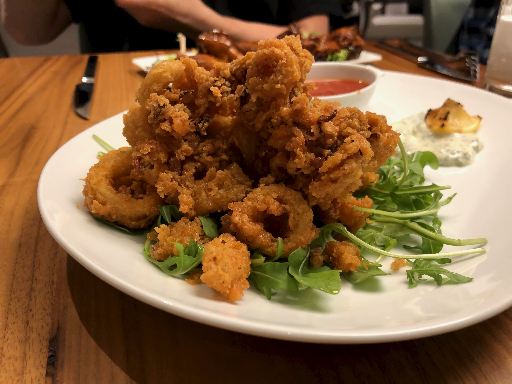
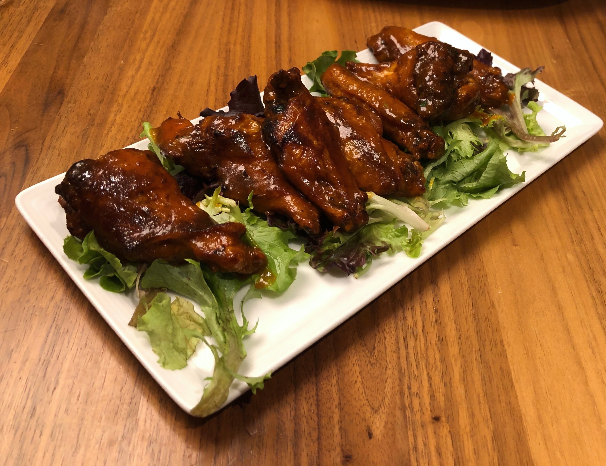
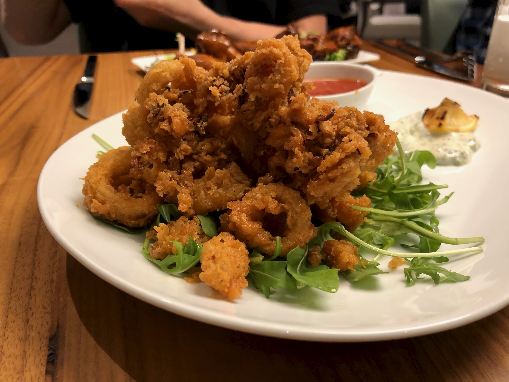

The Commons
The Commons is situated at the top level of Duke University’s newest dining center, the Broadhead Center (formerly known and still referred to as West Union). Currently, it is the only sit-down experience at the university where students are able to purchase food using dining points.
Considering the numerous awards and recognition that Duke Dining has received, it is no surprise that The Commons sits alongside as one of the highlights of being a student at Duke. Few other feelings compare to having a “fancy meal” in which you do not necessarily need to pay anything up front - your dining plan has already covered it. Adding to the experience, the menu is always dynamic and fresh, professionalism is abundant from the student servers, and the food really does taste as expected of a restaurant. It is important to note that the diners do not only consist of students as this is a popular destination for faculty lunches and family dinners.
Reflecting back on my experiences, what immediately comes to mind is the fact that we have the privilege of frequenting an expensive restaurant that sits atop of a multi-million dollar glass box. Duke students are often criticized and perceived as being elitist, and it seems The Commons does not help to discourage these prejudices. Far from saying that we should remove this restaurant, I think it is more appropriate to ask: how many other schools can boast an amenity such as this one?
 


